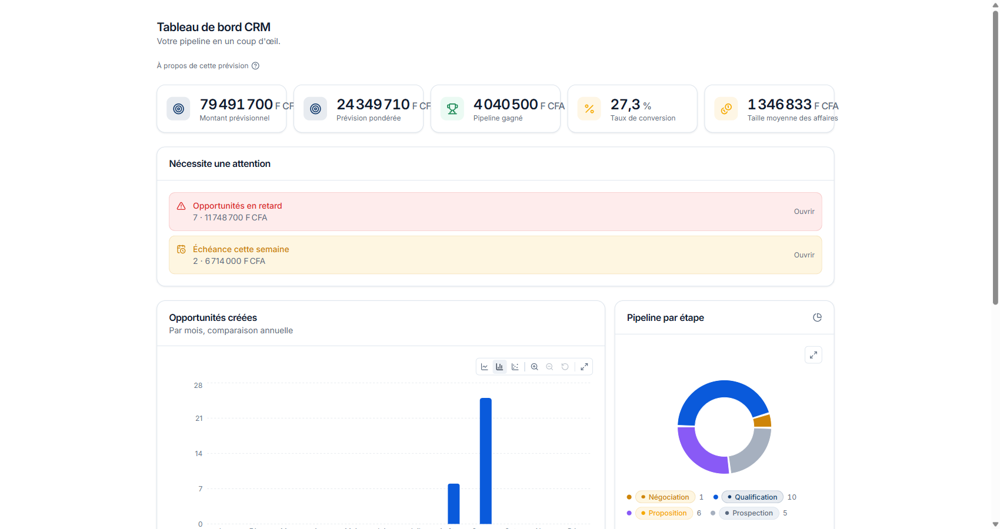
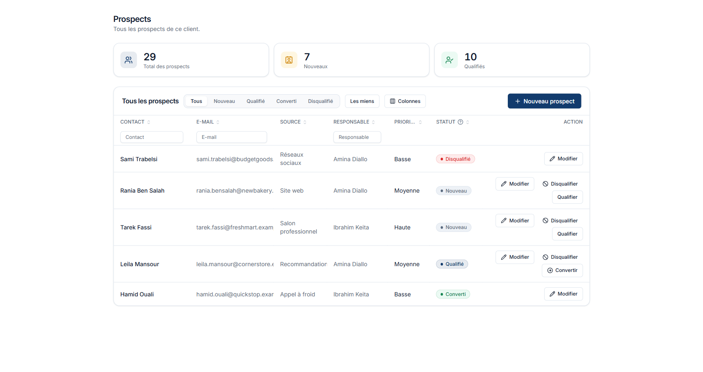
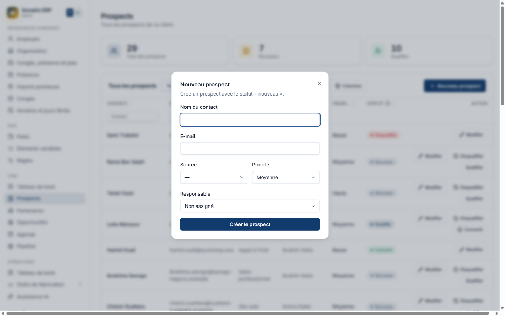
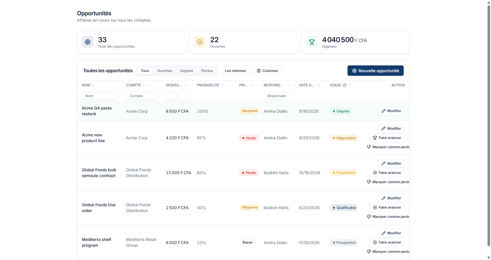
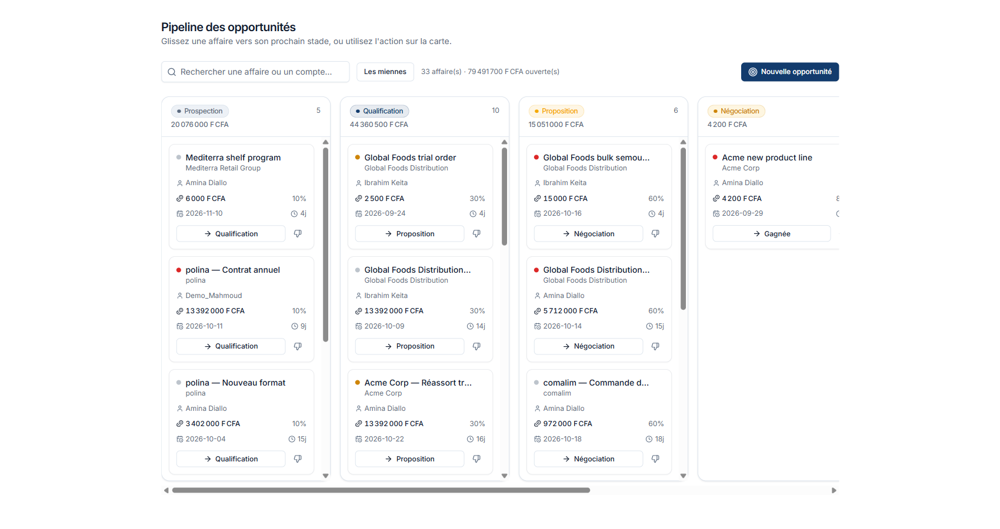
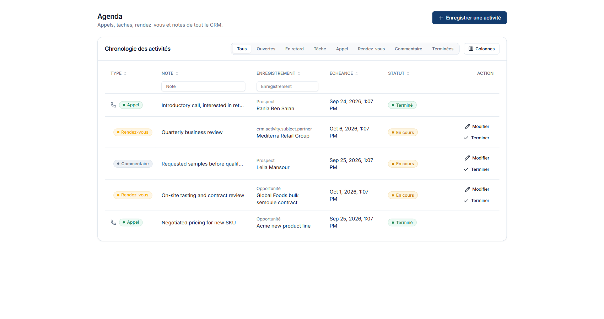
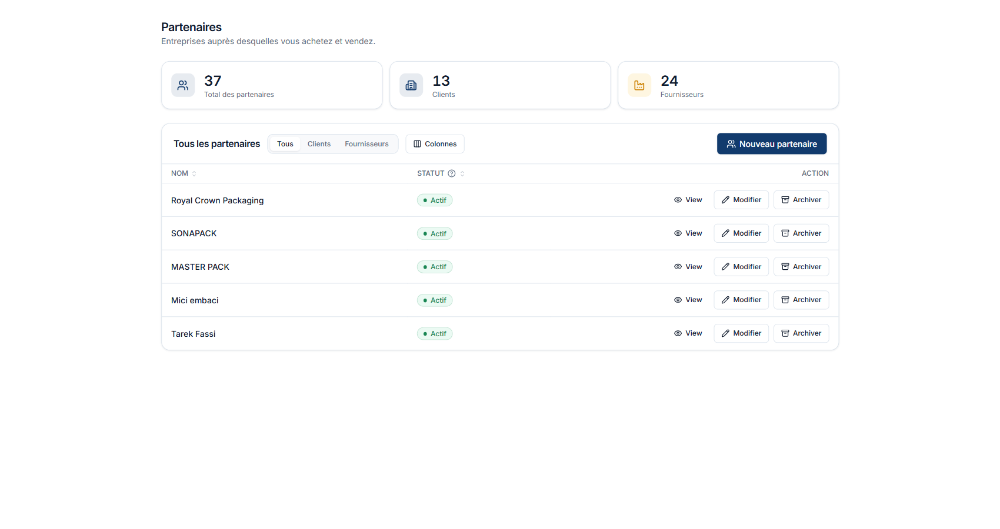

Ce guide montre, en images, comment noter un nouveau client possible,
comment suivre une affaire jusqu'à la vente, et comment garder la trace
de chaque appel et de chaque visite.
Pour voir, en un coup d'œil, où en sont toutes vos affaires.
Dans le menu à gauche : CRM → Tableau de bord

12
En haut, les grands chiffres : l'argent que vous pouvez gagner si toutes
les affaires se concluent.
Le cadre Nécessite une attention : ce sont les affaires en retard.
Occupez-vous de celles-là en premier.
C'est réussi quand…
Vous voyez des chiffres, et non une page vide.
Tâche 2
Trouver un prospect dans la liste
Un « prospect » est une personne qui pourrait devenir client, mais qui n'achète pas encore.
Dans le menu à gauche : CRM → Prospects

123
Ces boutons trient la liste. Tous montre tout le monde.
Nouveau montre ceux que personne n'a encore appelés.
Pour chercher quelqu'un, tapez son nom dans la case sous le mot CONTACT.
La colonne STATUT donne la couleur de chaque prospect :
gris = nouveau, bleu = qualifié, vert = converti, rouge = disqualifié.
C'est réussi quand…
La personne que vous cherchez apparaît sur une ligne du tableau.
Tâche 3
Enregistrer un nouveau prospect
À faire dès qu'une personne vous demande vos produits, au téléphone ou sur le marché.
Dans le menu à gauche : CRM → Prospects
1
Cliquez le bouton bleu foncé Nouveau prospect, tout en haut à droite.
Une fenêtre s'ouvre au milieu de l'écran :

23456
Écrivez le nom de la personne dans Nom du contact. C'est la seule case obligatoire.
Écrivez son adresse e-mail, si elle en a une. Sinon, laissez vide.
Source : d'où vient cette personne — le marché, le téléphone, une recommandation.
Priorité : mettez Haute si elle veut acheter vite.
Cliquez le grand bouton bleu Créer le prospect.
Attention
Si vous fermez la fenêtre avec la croix ×, tout ce que vous avez écrit est perdu.
C'est réussi quand…
La fenêtre se ferme toute seule, et le nom apparaît dans la liste avec l'étiquette grise Nouveau.
Tâche 4
Qualifier, puis convertir un prospect
« Qualifier » veut dire : cette personne veut vraiment acheter.
« Convertir » veut dire : elle devient un vrai client.
Dans le menu à gauche : CRM → Prospects
12
Sur la ligne de la personne, cliquez Qualifier.
Son étiquette devient bleue : Qualifié.
Quand elle est prête à commander, cliquez Convertir.
Son étiquette devient verte : Converti.
Attention
Le bouton Disqualifier sert quand la personne ne veut plus rien.
Ne le cliquez pas à la place de Qualifier : les deux mots se ressemblent beaucoup.
C'est réussi quand…
La couleur de l'étiquette, dans la colonne STATUT, a changé.
Tâche 5
Faire avancer une affaire
Une « opportunité » est une affaire en cours : un client veut acheter une quantité, à un prix.
Dans le menu à gauche : CRM → Opportunités

12
Cliquez Faire avancer quand l'affaire progresse.
Elle passe au stade suivant : Prospection, puis Qualification,
puis Proposition, puis Négociation, puis Gagnée.
La colonne STADE dit où en est chaque affaire aujourd'hui.
Attention
Le petit bouton avec le pouce vers le bas veut dire « Marquer comme perdue ».
Une affaire perdue ne revient plus dans la liste des affaires ouvertes.
C'est réussi quand…
Le mot dans la colonne STADE a changé, sur la ligne de l'affaire.
Tâche 6
Déplacer une affaire sur le tableau
C'est le même travail que la tâche 5, mais présenté en colonnes.
Beaucoup de personnes trouvent ce tableau plus simple.
Dans le menu à gauche : CRM → Pipeline

12
Chaque colonne est un stade. Le chiffre en haut à droite de la colonne
dit combien d'affaires s'y trouvent, et pour combien d'argent.
Sur chaque carte, le bouton porte le nom du stade suivant.
Cliquez-le : la carte saute dans la colonne d'à côté.
C'est réussi quand…
La carte a changé de colonne.
Tâche 7
Noter un appel ou une visite
Pour que tout le monde sache ce qui a été dit au client, même si vous êtes absent ce jour-là.
Dans le menu à gauche : CRM → Agenda

123
Cliquez Enregistrer une activité pour noter ce que vous venez de faire.
Ces boutons trient la liste : Tâche, Appel, Rendez-vous, Commentaire.
En retard montre ce qui aurait dû être fait avant aujourd'hui.
Quand le travail est fait, cliquez Terminer sur sa ligne.
C'est réussi quand…
La ligne quitte la liste Ouvertes et passe dans Terminées.
Tâche 8
Voir la liste des clients
Un « partenaire » est une entreprise avec qui on travaille :
un client qui achète, ou un fournisseur qui vend.
Dans le menu à gauche : CRM → Partenaires

12
Clients = ceux qui vous achètent. Fournisseurs = ceux qui vous vendent.
Le bouton Nouveau partenaire sert à ajouter une entreprise
qui n'est pas encore dans la liste.
AttentionArchiver retire un partenaire de la liste de tous les jours.
Ne le faites que si l'entreprise a vraiment fermé.
C'est réussi quand…
Le nom de l'entreprise apparaît dans le tableau.